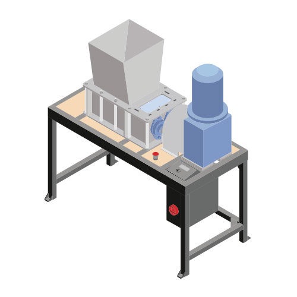

Build a Shredder Pro
Build a Shredder Pro
So you want to shred plastic? Cool! We have 2 different shredders: the original small Shredder, and the Shredder Pro. This is the Pro - it's more robust, advanced and productive than the smaller one, but also more complex to build. But if you're familiar with building machines it's very doable, and you can also buy parts on the bazar. Or the whole machine! You could even sell them yourself. The Shredder is actually the most requested machine around the world!
Tip: Building a Shredder Pro requires a bit more advanced tools and skills than the normal shredder. The tools itself are still relative basic techniques and can be found anywhere in the world. But the tolerances are definitely tighter. So you need to make sure your tools and skills are up for the job
🛠 Required machinery & skills
| Build Shredder Pro | Machines needed | Skills needed |
|---|---|---|
|  | - Lathe - Drill press - Milling machine - Welding machine (not specific) - Torq wrench - M16 hand tap | - Welding (intermediate) - Machining (expert) - Assembling (expert) - Electronics (expert) |
🔩 Materials and parts
You need to make and buy parts. In the download-kit you can find the complete Bill of Materials. It's a list for the entire Shredder Pro. Below you can find the commercial parts you need to buy and we go more in depth on where to look out for.
Motor option & explanation
All the energy to shred the plastic comes from the electric motor. More energy means more productivity and smaller flakes. A double shaft shredder works at a low speed and a high torque, so the motor needs to have these requirements.
To choose a 3-phase geared motor, you need to check:
- Nominal Power
- Output speed
- Torque
- Service factor
Nominal Power
Nominal power is a value directly linked to nominal current. On most motors, you will be able to run at this power continuously (depending on your safety factor, ambient temperature, humidity, etc).
However, for a short amount of time, your motor will be able to deliver a higher power by having a higher current. This can be typically observed at the start of the rotation or when you encounter harder pieces to shred.
But if the motor is capable of running at a higher power, this will damage it. We found that no motor should be run at more than 1,6 times their nominal current/power, and this will be controlled by the electronics box. See the recommendation paragraph for which power will work for your needs.
Speed and torque
In a 3-phase motor, the motor speed depends on the frequency and the number of poles of the motor.
- Theoretical speed (rpm)
- 2 - 12 are number of poles of the motor
| Frequency (Hz) | 2 | 4 | 6 | 8 | 10 | 12 |
|---|---|---|---|---|---|---|
| 50 | 3000 | 1500 | 1000 | 750 | 600 | 500 |
| 60 | 3600 | 1800 | 1200 | 900 | 720 | 600 |
Motor Synchronous Speeds (RPM)
The real speed will likely be less due to loads, friction...
Speed can be then reduced through a gearbox, which is defined by a gearbox ratio. Ratio = input speed / output speed. The higher the speed will be, the higher the productivity will be. A double axis shredder is a shredder that runs at a low speed. We recommend looking for a gearbox that will bring the output speed between 15 and 25 revolutions per minute.
Torque is a relation between the output speed obtained and the motor’s power. The higher the torque will be, the tougher the shredder will be. To get a high torque you can increase the power of the motor or increase the gearbox ratio. Know that increasing gearbox ratio will lower the speed and productivity. For this shredder, we recommend a nominal torque of 1100N.m as a minimum and 2000N.m as a solid goal.
Service Factor
The service factor is the percentage of overloading what the motor can handle for short periods when operating normally within the correct voltage tolerances. Both your gearbox and your motor have a service factor, these can be different. In any case, make sure that the service factor of both elements is at least 1, or your motor reductor is downgraded.
Having a higher motor service factor can be useful for:
- Inaccuracy in predicting intermittent system horsepower needs
- Longer insulation life by lowering the temperature at rated load
- Intermittent or occasional overloads
- Ambient temperature above 40°C
- Low or unbalanced supply voltages
Having a higher gearbox service factor can be useful for:
- Elevated temperatures
- Extreme shock loads or vibrations
- Non-uniform loads
- Cyclic loads
The higher the safety factor, the higher the lifetime. You might as well compensate and have a lower-powered motor for this reason.
Motor proposals
2.2kW - 16rpm - 1200N.m: smallest suggested motor, will be fine for small household plastic, but the motor will limit the operation of the shredder and so it will never operate at its full capacity
3kW - 18rpm - 1500N.m: probably a good price/efficiency compromise
4kW - 18rpm - 2000N.m: you will be able to operate the shredder to its full capacity
5,5kW - 22rpm - 2300N.m: very long life motor as you will be running the motor under its capacity; might be worth it for a high productivity shredder (higher speed to limit the torque)
Coupling option & explanation
Couplings usually have a nominal torque and a maximum torque they can manage. Nominal torque is the torque value that the coupling can handle without damage. The coupling may handle a higher torque for a short period, but always keep things under the maximum torque. The component life will be reduced if the coupling operates frequently over the nominal torque.
If our motor has around 2000 Nm of nominal torque, an HRC 230 Coupling will work properly. Even if you choose a motor with lower torque, we recommend to slightly oversize the coupling for increased durability.
| Reference | Nominal Torque (Nm) | Max Torque (Nm) | Notes |
|---|---|---|---|
| HRC 230 Coupling | 2000 | 5000 | Pros: cheap Cons: smaller misalignments |
| F140 Tyre coupling | 2325 | 5642 | Pros: higher misalignment Cons: more expensive |
We recommend following the assembly instructions of the manufacturer. Not following this requirement can lead to damage or early wear.
Gears choice
The gears transmit the power between the two shafts. Double shaft shredders work with low speed and high torque, so the gears need to be calculated for that torque. We recommended the following gear specs:
| Gear type | Module | No of teeth | Width (mm) | Hole diam. (mm) | Keyway (mm) |
|---|---|---|---|---|---|
| Spur gear | 6 | 18 | 60 | 45 | 14 x 9 |
| Spur gear | 6 | 20 | 60 | 45 | 14 x 9 |
We recommend to use gears with hardened teeth.
The distance between them has to be 114mm. Many components, like the blades or the box, depend on that distance. If the gear specs change, the distance shall be kept fixed or a redesign of the blades and box will be required.
Shaft specifications
The shaft is made by a 50mm hexagon bar milled to a 45mm diameter. We recommend using mid-high quality steel with a minimum yield strength of 350 Mpa (we used C45 steel).
Bearing specifications
We used UCFL209:
- Shaft size 45 mm
- Fixing Spacing 148 mm
- Fixing hole diameter 19mm
We use an M16 bolt to fix them: an adaptor is required
Laser cut parts
All the laser cut parts are made with mild steel. They don’t require a specific material. However, we used wear-resistant steel (Hardox 400) for the blades and fixed blades (not the spacers), to make them more durable.
⚡ Electronic box
Electric components
- 1 x 3 phase general switch
- 1 x Emergency stop switch with 3 NC connections
- 1 x 3 phase current limiter, 6,8 Amps
- 2 x 3 phase contactors, 3 NO and 1 NC connections
- 1 x 5V 500mA power supply
Schematic link
https://github.com/davehakkens/shredder-reverse/blob/master/Schematic.pdf
Electronic components
- 1 x Arduino nano
- 1 x 5V 2 channels relay module 250VAC
- 1 x ACS712 30A hall effect sensor module
- 1 x full bridge rectifier 1A (DF10-G)
- 1 x 100uF capacitor 10V
- 2 x 10k resistors 1/4W
- 1 x 100k resistor 1/4W
- 1 x 2.2mF capacitor 10V
- 1 x 3 position toggle switch
Arduino code link
https://github.com/davehakkens/shredder-reverse
👌 Tips & tricks while making
There are two different types of blades. 13 teeth blades require more motor power but they produce smaller flakes, whereas, 6 teeth blades require less power but produce longer flakes. The grip should be slightly better with 6 teeth blades, but it depends on the shape and material.
| Blade | Required power | Flake size | Grip | Output |
|---|---|---|---|---|
| 6 teeth | Lower | Longer | Better | Slightly Lower |
| 13 teeth | Higher | Smaller | Good | Slightly Higher |
To have a good balance in the shredder’s performance, we recommend to use 13 teeth blades on the shaft connected to the motor and 6 teeth blades on the opposite shaft. But you can choose and set up the shredder as you want.
The gap between the blades is 0,25mm. To reach that level of precision, it is good to keep all the parts clean while the machine is being assembled.
The blades are fixed to the shaft by two nuts on each side. It is recommended to tighten the nuts (100Nm at least) to prevent the plastic from entering between the blades and spacers.
The shafts are quite long and heavy. If you cannot use a good lathe, we recommend you to order them from a professional. Order multiple spacers for assembly adjustment.
Weld the tubes of the box, for faster cleaning (non structural weld)
Attach the moter: You will probably use a different motor than the one in the 3D model. So you will need to modify the frame.
Additional Options
Safety Hopper
We designed a fully closed version of the hopper to prevent the plastic from jumping out and make it safer for people to use. The drawings are accessible in the download kit to laser cut. Make sure to choose the hopper you want before sending the files to laser cut.
Different sieves
You could use the shredder with no sieve, but in order to achieve different flake size standards - see input & output chapter - we provided different sieve designs to be cut. You can get your own drilled hole plates, but we designed these sieves to be the perfect sizes for our standards, with a denser holes concentration for efficiency and with a line for easy welding.
If you need help, have questions or looking for someone to talk to in your lonely cold workspace. Head to the #build channel on Discord. Here we talk nerdy about machines.